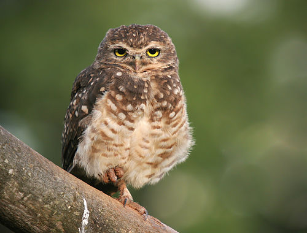

Hõse
coruja buraqueira
Athene cunicularia
Holo nawe

How to cite
Hõse. In: Enawenê-Nawê, Fauna. https://enawenenawe.terradoc.org/en/fauna/63-hose.html
coruja buraqueira
Athene cunicularia
Holo nawe

Hõse. In: Enawenê-Nawê, Fauna. https://enawenenawe.terradoc.org/en/fauna/63-hose.html